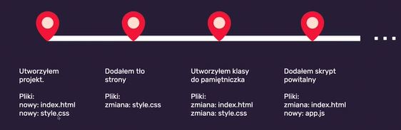

Jak działa terminal?
Każdy z systemów operacyjnych ma swój terminal.
Dobrze jest w VSC ustawić -> Shell command install ‘code’ command in PATH.
Na Windows w pasku start wyszukujemy -> cmd -> wiersz polecenia.
Komendy:
- dir wypisze to co mamy w katalogu, zawartości katalogu
- cd change directory, wyświetlenie aktualnej ścieżki
- cd C:\ przejście do głównego katalogu na dysku C
- cd .. przejście do katalogu wyżej
- cd nazwa-katalogu przejście do katalogu o nazwie nazwa-katalogu
- cd dev (d i tabulator)
- mkdir nazwa-katalogu tworzy się nowy plik o nazwie nazwa-katalogu
- code . odpala się VSC w aktualnym katalogu
Jest GIT!
GIT- system kontroli wersji (stworzył go Linux Torwards)- będziemy używać GITa jako maszynki do robienia zip-ów
- Pozwala na sprawne zarządzanie zmianami w projekcie, możemy robić zmiany w plikach a potem cofnąć się do stanu początkowego
- Możemy pracować nad projektem w grupie
- Działa lokalnie
- Do działania zdalnego potrzebuje serwera np.GitHub
- Znajomość podstaw GITa jest wymagana niezależnie od technologii
- Commitujemy jak dokładamy jakąś widoczną zmianę do projektu, lepiej częściej niż za mało
- Podstawowy flow: git add . / git commit -m”opis zmiany†/ git push
git -- version - sprawdzamy czy git się zainstalował, podaje nam wersje gita
Konfiguracja:
git config --global user.name “Anna Śmierzchała”
git config --global user.email smierzchala.anna@gmail.com
sprawdzamy:
git config --get user.name /user.email
Zainstalował się też terminal: git bash i powershell jakby co
Repozytorium = projekt, czyli zawiera wszystkie pliki naszego projektu
W terminalu musimy wrócić do homepage, potem git init, i tworzy się ninja katalog którego nie widać .git
Commit = stan projektu na daną chwilę i opis tego co się zmieniło od ostatniego zapisu
zapisuje historię zmian między poszczególnymi commitami
git status - no commit yet, nie śledzone pliki więc musimy dodać je do repozytorium, żeby je śledzić
Polecenia:
git add . - dodaj pliki
git status - pokazuje nowe pliki do zacommitowania
git commit -m “initial commit†- dodanie commita, opis zmian, opisy zrozumiałe, co zmieniliśmy
gitk - pokazuje historię commitów
dir / a zamiast ls a
cls zamiast clear,ctr c albo samo q cofa
Jak często commitować?
Na początku rób to często! Np. dodałem sekcje, dodałem style
Robię zmiany, sprawdzam stronę czy jest ok, git status, git add ., i git commit -m””, gitk
W VSC mamy narzędzie do commitowania też, ale lepiej korzystać z terminala/konsoli. Jest też rozszerzenie GitLens - pokazuje nam po kolei wszystkie commity.
Check pointy:
